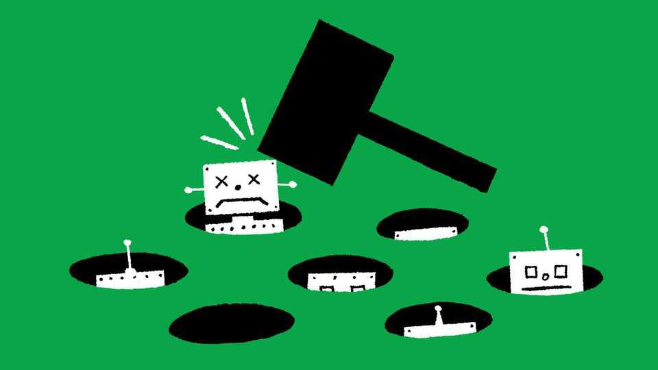
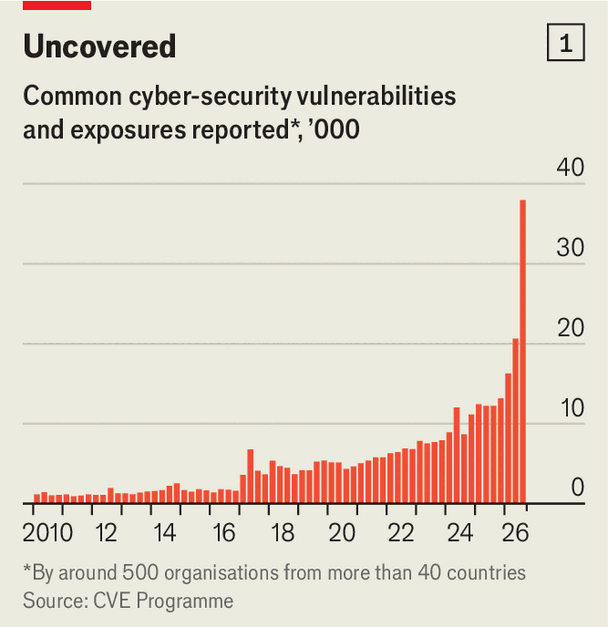
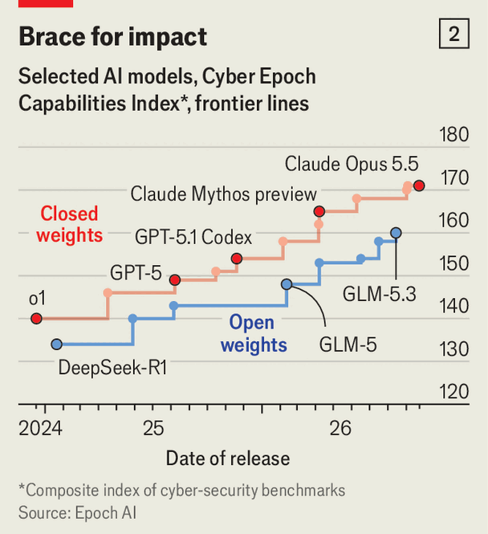

Firms are racing to protect themselves from AI cyber threats
Hackers have unleashed a devastating wave of attacks. More may follow

Nov 5th 2026
The corporate world is under siege. In a matter of weeks a flurry of serious cyber-security incidents have shaken the confidence of bosses in their defences. Thousands of new software vulnerabilities have been discovered, aided by artificial intelligence. That, along with a slew of hacks, has led many to argue that cyber-risk is entering a perilous new phase.
So testing was the past month that some analysts have called it “Black October” (others, “the Hackening”). First AI was used to discover a critical flaw in PHP, a widely used programming language that underpins most websites. The vulnerability was leaked before patches could be deployed, so many websites were temporarily taken offline to be fixed. Then hackers stole some $6.3bn from Binance, a crypto exchange. November has been no easier. Across Europe, supermarket freezers have had their temperatures cranked up, destroying millions of euros worth of food. At Crédit Mutuel Arkéa, a French bank, funds have been stolen in a burst of fraudulent transactions.
Governments have been hit, too. Air-raid alert apps have been hacked in both Ukraine and Russia. Cyber-criminals have swiped data from Denmark’s population registry, America’s Department of Homeland Security and the FBI. Japan has declared a cyber-security state of emergency. On November 3rd Richard Horne, head of Britain’s National Cyber Security Centre, warned that in the coming months there may be an “unprecedented rise in the number of cyber incidents”.
Even before this onslaught, the threat was growing. Remote work and an increase in internet-connected devices created more vulnerabilities. The prevalence of digital currencies made it easier for hackers to make money from their exploits.

AI has exacerbated the danger. In April Anthropic, a frontier lab, said it would not release Mythos, its latest model, to the public. Instead a limited number of software providers and financial institutions were granted access to help them plug gaps in their cyber-defences. OpenAI, a rival lab, soon launched a similar effort. In recent months frontier models have unearthed huge numbers of security flaws: the count of “common vulnerabilities and exposures” reported to software-makers and specialist cyber-security organisations is soaring (see chart 1).
Worryingly, however, the cyber capabilities of open-weight models have been rapidly improving in parallel, making it easier for even novice hackers to identify vulnerabilities (see chart 2). Moreover, AI has sped up the process of exploiting a vulnerability once it is discovered. Working out how to do this used to take days or weeks; now it can take hours. That means there is far less time for defenders to patch flaws in their software. The technology is also fuelling “social engineering” attacks, with models being used to automate phishing emails and clone the voices of employees.
Employees’ adoption of AI in their everyday work is adding to the problem. This makes companies a “ripe target” for hackers, says Nicole Carignan of Darktrace, a cyber-security firm. Surveys suggest that most workers use some type of AI service that has not been vetted by IT teams. On October 21st the maker of LiteLLM, a popular open-source AI tool, announced that it had again been compromised by hackers, following a similar incident in March that put thousands of organisations at risk.

Businesses are scrambling to respond. At big institutions up to a fifth of IT resources are being rerouted to finding and fixing security flaws, says Vanessa Lyon of BCG, a consultancy. Firms are prioritising software that is exposed to the internet, such as websites and apps. Mark Hughes of IBM, an IT giant, says that in cases where no patch is available yet for vulnerabilities that have been unearthed, he is telling clients to contain the at-risk software, perhaps taking it offline or limiting which staff have access.
Companies are also fighting AI with AI. Models can be deployed not just to scan for vulnerabilities, but also to spot and neutralise suspicious activity and catch phishing schemes. Goldman Sachs, for example, has greatly increased the share of the bank’s AI budget that it allocates to cyber-security, according to people familiar with the effort. Managing such spending requires careful planning. “How do you make sure you don’t run out of tokens mid-breach?” asks Charlie Lewis of McKinsey, another consultancy. He notes that some firms are setting aside tokens for emergencies, while others are establishing procedures to fast-track spending approvals in the event of a cyber-attack.
Yet a variety of challenges may undermine the defenders. One is human gullibility, which even the cleverest cyber-defences will struggle to compensate for entirely. The heist of Binance, allegedly orchestrated by North Korean hackers, was reportedly caused by an employee downloading malware onto their work computer during a fake job interview.
A second challenge is “operational technology”, the industrial hardware used on factories and shop floors. This type of machine typically runs on decades-old software, and has often been ignored by cyber-security teams because ancient code made it hard for hackers to get at. Yet, as seems to have been the case in the recent freezer attacks, AI is now being used to understand and manipulate such software.
Then there is the reality that many smaller firms lack the necessary resources to invest in cyber-security capabilities. Such businesses can then be used as gateways to other targets, including larger enterprises. The source of a recent hack of Polymarket, a betting platform, was a security flaw in a website-monitoring tool it used called DebugBear.
Some large companies are providing their smaller suppliers with cyber-security advice. Government programmes offer support, too. The PHP incident may furnish a template for how these businesses will be defended in future. Major providers of cloud infrastructure, such as Amazon and Cloudflare, quickly put in place a number of protections for their customers, such as firewalls, that shielded small businesses without them having to lift a finger.
Cyber-security has always been an arms race, and the advent of AI has handed attackers a devastating new weapon. In time the balance may shift back in favour of defenders, as software providers race to offer AI-powered solutions. Until then, businesses will have to confront a dangerous new world. ■